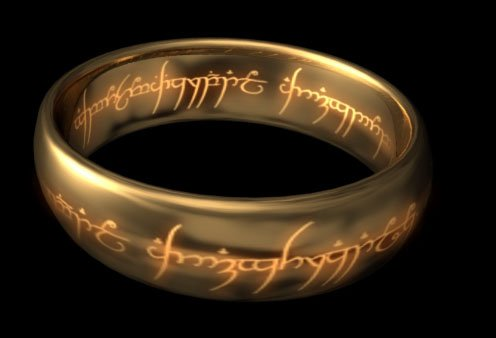

[본 사진은 글의 내용과 다소 관계가 없습니다]
고대 이스라엘의 다윗 왕이 어느날 궁중의 세공장을 불러 자신을 기리는 아름다운 반지를 하나 만들라고 지시하며 “반지에는 내가 큰 승리를 거둬 기쁨을 억제하지 못할 때 스스로를 자제할 수 있고, 반면 큰 절망에 빠졌을 때 좌절하지 않고 용기를 얻을 수있는 글귀를 새겨넣도록 해라”고 주문했다.
반지를 만들어놓고도 적합한 글귀가 생각나지 않아 며칠을 끙끙대던 세공장은 지혜롭기로 소문난 솔로몬 왕자를 찾아갔다.
세공장의 고민을 들은솔로몬은 잠시 생각한 뒤 말했다.
"이것 또한 곧 지나가리라"